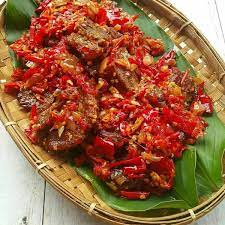

Dendeng

Dendeng refers to thinly sliced dried meat in Indonesian cuisine. It is preserved through a mixture of sugar and
spices and dried via a frying process. It is similar to jerky. The creation of dendeng is commonly credited to
the Minangkabau people, and their earliest dendeng was made from beef, dried so it would be preserved for days
and could be taken along with them when they traveled.
The Padang cuisine version—probably the most popular dendeng dish in Indonesia—is called dendeng balado or
dendeng batokok, and is a speciality from Padang, West Sumatra, made from beef which is thinly cut then dried
and fried before adding chillies and other ingredients.
Ingredients
- 10 pieces of thinly sliced silverside beef
- 1 piece of sliced ginger
- 1 handful of sliced shallots
- 1/2 teaspoon of whole coriander
- 1 pinch of salt
- 1 pinch of pepper
- 5 cups of water
- 1 clove of garlic
- 2 handfuls of chopped red chilies
- 1 handful of sliced shallots
- 1 pinch of salt
- 1/4 of a lime
Directons
- Using a mortar and pestle, grind the coriander, ginger, shallots, and garlic. Add a pinch of salt and
pepper, and grind to a paste.
- Rub the ground spices onto the sliced beef and leave them for few minutes.
- Boil the spiced beef on a medium heat until they change colour. Take out, place them on a mortar and pound
each one to get rid of the water.
- Heat oil in a wok, and deep fry the beef very quickly on a high heat, until they turn darker. Take them out
and place on the mortar and pound each one once again.
- Heat another oil in a wok, and once again, deep fry the meat until they turn brown. Take out immediately and
place on a strainer. Let the oil drain.
- Keep the leftover oil to sauté the chilies later.
- Again using a mortar and pestle, grind the chilies with salt to help with the grinding.
- Add shallots, and grind again. You want to leave this coarse, so you don't need to grind them to a paste.
- Sauté the chili paste together with the leftover oil from before.
- Give a dash of the squeezed lime juice, and mix well.
- Place the beef on a plate, and pour the chilies on top.
- Best enjoyed with a plate of warm rice.
home